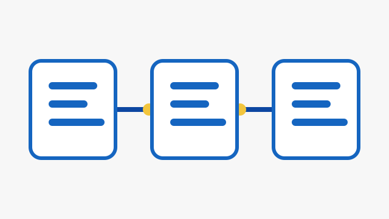

O que estou aprendendo
Estou praticando HTML para estruturar conteúdo com significado.
Um exemplo de elemento estudado é
<a href="...">.
Plano de estudo
- Revisar a estrutura do documento.
- Praticar títulos e parágrafos.
- Construir links.
- Inserir imagens acessíveis.
Tecnologias
- HTML
- CSS
- JavaScript
Links úteis
Uma imagem com contexto
